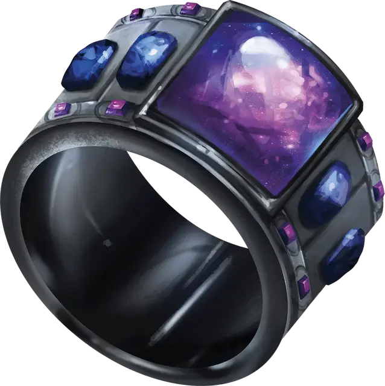

Кольцо падающих звёзд
Ring of Shooting Stars
Кольцо, очень редкое (требуется настройка ночью на открытом воздухе)

Рекомендованная стоимость 5 001-50 000 зм
Нося это кольцо в области тусклого света или темноте, вы можете неограниченно действием накладывать им пляшущие огоньки [dancing lights] или свет [light].
У кольца есть 6 зарядов для использования описанных ниже свойств. Кольцо ежедневно восстанавливает 1к6 зарядов на рассвете.
Огонь фей. Вы можете действием потратить 1 заряд, чтобы наложить кольцом огонь фей [faerie fire].
Шаровая молния. Вы можете действием потратить 2 заряда, чтобы создать кольцом от одной до четырёх шаровых молний диаметром 3 фута. Чем больше шаров вы создадите, тем менее эффективен каждый из них.
Каждый шар появляется в свободном пространстве, видимом вами в пределах 120 футов. Шары существуют, пока вы концентрируетесь (как при концентрации на заклинании), но не более 1 минуты. Каждый шар испускает тусклый свет в радиусе 30 футов.
Вы можете бонусным действием переместить каждый шар на расстояние до 30 футов, но не более чем на 120 футов от себя. Если какое-нибудь существо кроме вас оказывается в пределах 5 футов от шара, шар выпускает в него разряд молнии и исчезает. Это существо должно совершить спасбросок Ловкости Сл 15. При провале существо получает урон электричеством, зависящий от количества созданных вами шаров.
| Шары | Урон электричеством |
| 4 | 2к4 |
| 3 | 2к6 |
| 2 | 5к4 |
| 1 | 4к12 |
Падающие звёзды. Вы можете действием потратить от 1 до 3 зарядов. За каждый потраченный заряд вы выпускаете из кольца по одному светящемуся шарику в точку, которую видите в пределах 60 футов. Все существа в пределах 15-футового куба, исходящего из этой точки, покрываются искрами и должны совершить спасбросок Ловкости Сл 15, получая 5к4 урона огнём при провале или половину урона при успехе.